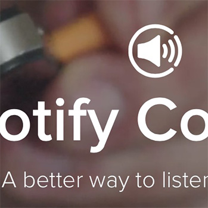

The stuff I've been part of as a tribe lead at Spotify
During the last few years, as I've been running the Partners Tribe at Spotify, I've been part of a world class team. With the risk of not sounding humble, what we achieve together awe me every day. Hopefully our biggest victories are still ahead, but I wanted to highlight some stuff that the team has done over the last few years, and that I have hopefully played some small part in.
- Shipped world class product · In the last two years, the team has shipped Spotify for Playstation, Chromecast, Android Auto, Apple CarPlay and Sonos as well as Nike+, Shazam, Starbucks and DJ software like Pacemaker and Djay2. These products delight millions of users every day, and has brought many new users into our experience, and convinced existing users to get Premium.
- Shipped entire new platforms · In any succesful strategy aimed at ubiquity across devices, you need a layer of scalable technology, and a product experience that makes that technology easily accessible. We've successively built up our capabilities, including Spotify Connect (available on hundreds of SKU's), our iOS and Android SDK's as well as our new Web API, servicing billions of requests each month.
- Deprecated and killed old platforms · As important as building out new platforms and capabilities is tending to the legacy and making sure you pave the way for moving quickly in the future. We've worked incredibly hard on getting into a mindset of moving quickly. A few examples of though choices this lead to include discontinuing the apps strategy, deprecating libspotify, and killing our old web api. Neither of these were easy decision, but they freed up capacity to build the future.
- Grown a sustainable and happy team · Throughout these years, we've grown the team by close to 100%. We've grown from being based only in Stockholm to being in Stockholm, London and San Francisco. We've managed to build one of the most diverse engineering teams in Spotify. We've had close to zero attrition, with only three people from partners leaving Spotify in the last two years. Many engineers have moved from one discipline to another, or into product or management. We've of course had a few fuckups, but we're still mostly the same group growing and learning as we go.